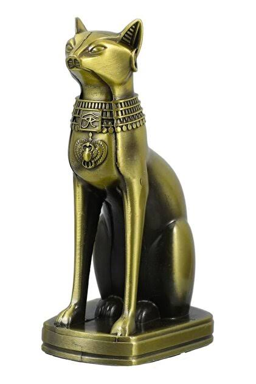

Tarihçe ve Evcilleşme Süreci
Anatomik ve Biyolojik Üstünlükler
Davranış, İletişim ve Beslenme Alışkanlıkları
Kedilerin İnsan Hayatındaki Yeri
Tarihçe ve Evcilleşme Süreci
Anatomik ve Biyolojik Üstünlükler
Davranış, İletişim ve Beslenme Alışkanlıkları
Kedilerin İnsan Hayatındaki Yeri
Kedilerin Dünyası: Tarihçeleri, Biyolojileri ve Davranış Özellikleri
Kediler (Felis catus), dünya çapında en çok beslenen ve insanlarla en iç içe yaşayan evcil hayvanların başında gelir. Hem bağımsız doğaları hem de sevgi dolu karakterleriyle bilinen bu canlılar, on binlerce yıllık bir evrim ve evcilleşme sürecinin sonucunda bugünkü benzersiz özelliklerine kavuşmuşlardır.
1. Tarihçe ve Evcilleşme Süreci
Kedilerin insanlarla olan ilişkisi yaklaşık 10.000 yıl önce, Tarım Devrimi'nin başlamasıyla Bereketli Hilal (Ortadoğu) bölgesinde filizlenmiştir. İnsanların yerleşik hayata geçip tahıl depolamaya başlaması, fare ve sıçan gibi kemirgenleri bu depolara çekmiştir. Bu kemirgenleri avlamak için yerleşim yerlerine gelen vahşi kediler (Felis silvestris lybica), zamanla insanlarla karşılıklı faydaya (simbiyoz) dayalı bir ilişki kurmuştur.

Özellikle Antik Mısır'da kediler sadece birer haşere avcısı değil, aynı zamanda kutsal varlıklar olarak kabul edilmiştir. Ev ve bereket tanrıçası Bastet, genellikle kedi başlı bir kadın veya doğrudan bir kedi olarak tasvir edilmiştir. Kedilerin evlerde el üstünde tutulması ve öldüklerinde sahipleri tarafından yas tutularak mumyalanması, onlara verilen tarihi değerin en büyük göstergesidir. Antik Mısır'dan sonra ticaret gemileriyle Avrupa'ya ve ardından tüm dünyaya yayılan kediler, farklı iklim ve coğrafyalara hızla uyum sağlamıştır.
sayfanın başına dön
2. Anatomik ve Biyolojik Üstünlükler
Kediler, doğuştan kusursuz birer avcı olarak tasarlanmıştır. Bu avcı kimliklerini destekleyen çok sayıda olağanüstü biyolojik donanıma sahiptirler:
- Esnek İskelet ve Doğrulma Refleksi: Kedilerin köprücük kemikleri diğer memeliler gibi iskelete doğrudan bağlı değildir; kasların arasına gömülüdür. Bu durum onlara inanılmaz bir esneklik sağlar. Havada düşerken "doğrulma refleksi" adı verilen bir içgüdüyle, omurgalarını bükerek saniyeden çok daha kısa bir sürede yönlerini değiştirir ve neredeyse her zaman dört ayak üzerine düşebilirler.
- Gece Görüşü (Tapetum Lucidum): Kediler karanlıkta insanlardan yaklaşık 6 kat daha iyi görür. Gözlerinin arkasında yer alan tapetum lucidum adlı yansıtıcı tabaka, göze giren en ufak ışık hüzmesini bile retinaya geri yansıtarak gece görüşünü maksimize eder. Zifiri karanlıkta gözlerinin parlamasının sebebi bu biyolojik aynadır.
- Gelişmiş İşitme Ağı: Kulaklarında 32 adet kas bulunur ve bu sayede kulaklarını birbirinden bağımsız olarak 180 derece döndürebilirler. İnsanların ve köpeklerin duyamadığı çok yüksek frekanslı ultrasonik sesleri (örneğin bir farenin çıkardığı ince tıkırtıları) rahatlıkla duyarak yerini tespit edebilirler.
- Bıyıklar (Vibrissae): Kedilerin bıyıkları sıradan kıllar değildir; sinir uçlarıyla dolu, son derece hassas duyu organlarıdır. Bıyıkları sayesinde hava akımlarındaki değişimi hisseder, karanlıkta bile önlerindeki nesnenin boyutunu, şeklini ve geçecekleri deliğin genişliğini ölçebilirler.
sayfanın başına dön
3. Davranış, İletişim ve Beslenme Alışkanlıkları
Kedilerin gündelik davranışları, vahşi atalarından kalan içgüdüler ile evcilleşme sürecinin kusursuz bir sentezidir:
- Zorunlu Etobur (Obligate Carnivore) Beslenmesi: Kediler hayatta kalmak için kesinlikle et tüketmek zorundadır. Vücutları taurin ve arginin gibi esansiyel amino asitleri kendi kendine üretemez; bunları doğrudan hayvansal proteinlerden almaları hayati önem taşır.
- Uyku Düzeni: Ortalama bir kedi günde 12 ila 16 saat arasında uyur. Bu uzun uyku süreleri, doğadaki vahşi kedilerden miras kalan "avlanmak için maksimum enerji tasarrufu yapma" içgüdüsünün bir sonucudur.
- Miyavlamanın Evrimi: İlginç bir şekilde, yetişkin kediler doğada kendi aralarında iletişim kurmak için miyavlamayı neredeyse hiç kullanmazlar. Miyavlama, kedilerin binlerce yıl içinde sadece insanlarla iletişim kurmak, dikkat çekmek veya bir ihtiyaçlarını belirtmek için geliştirdikleri özel bir vokal dildir.
- Mırlamanın Sırrı: Mırlama genellikle mutluluk ve huzur belirtisi olarak bilinir. Ancak kediler stres altındayken, korktuklarında veya fiziksel acı çektiklerinde de mırlarlar. Mırlamanın 25-150 Hertz arasındaki düşük frekansının, kemik yoğunluğunu artırdığı ve doku iyileşmesini hızlandırdığı bilimsel olarak kanıtlanmıştır. Kedi, bir nevi kendi kendini tedavi etmek için motor gibi mırlar.
sayfanın başına dön
4. Kedilerin İnsan Hayatındaki Yeri
Modern çağda kediler, sadece evdeki haşereleri uzak tutmak için değil, psikolojik destek ve arkadaşlık amacıyla da evlerimizde yer alır. Bilimsel araştırmalar, kedi sevmenin ve onların mırlamasını dinlemenin insanlarda stres hormonu olan kortizolü düşürdüğünü, kan basıncını dengelediğini ve genel kaygı seviyesini azalttığını göstermektedir.Bağımsız ruhlu olmalarına rağmen sahiplerine derin bir bağla bağlanan kediler; zarif yapıları, gizemli doğaları ve sevecenlikleriyle insanlık tarihinin en önemli ve en popüler yol arkadaşlarından biri olmaya devam etmektedir.
sayfanın başına dön
kaynakça
Wikipedi
National Geographic
Tübitak Bilim Genç
sayfanın başına dön